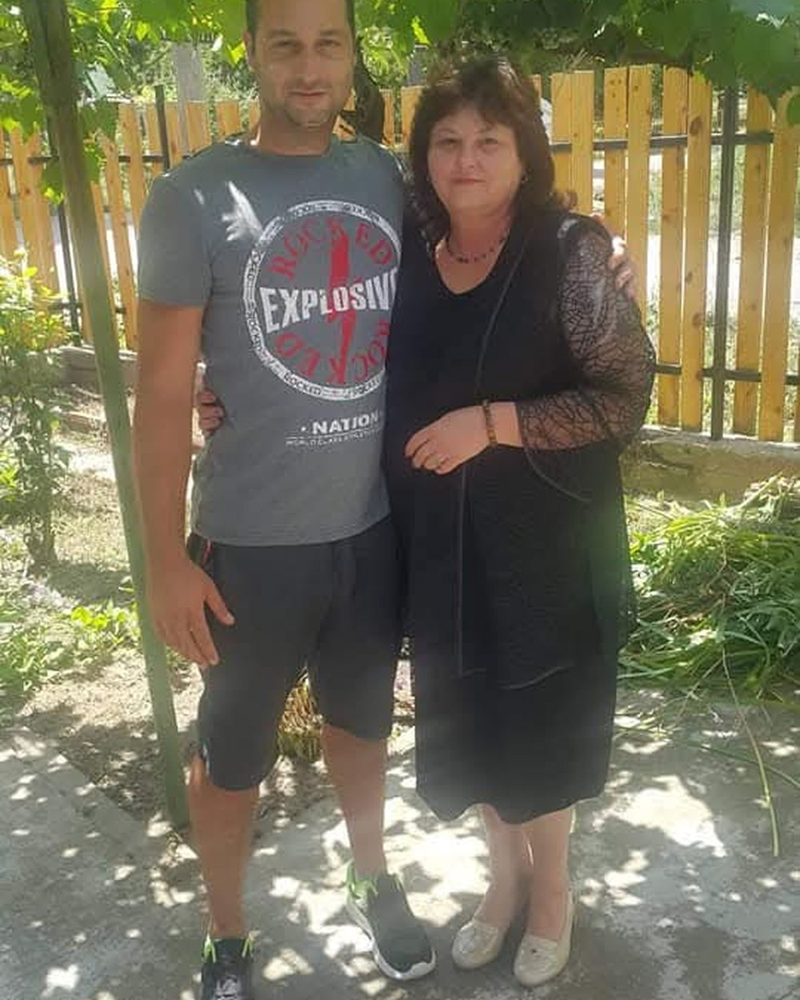
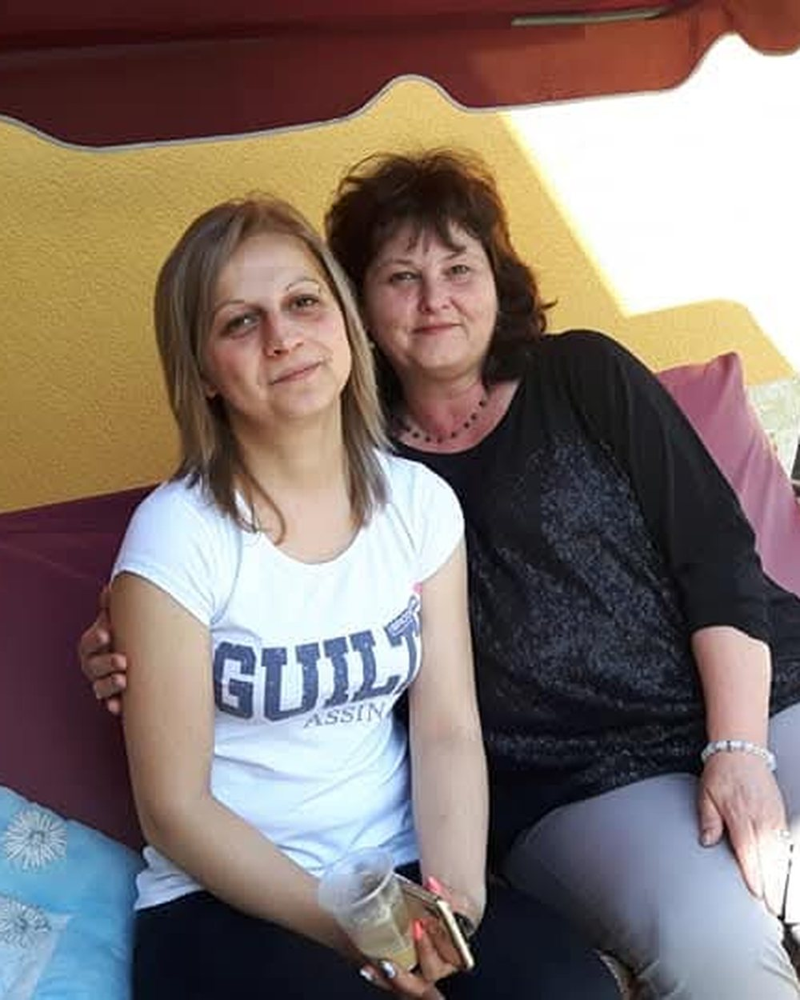
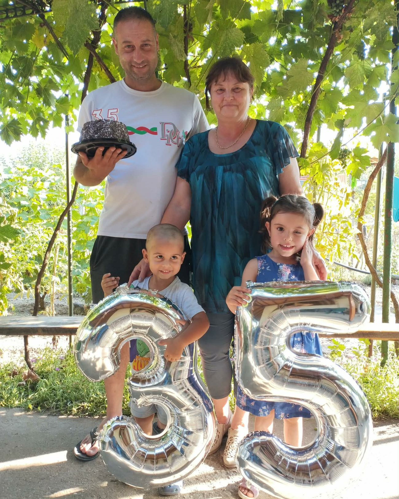
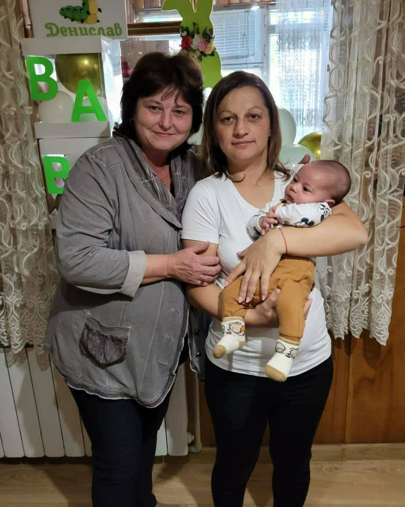

Честит рожден ден
Лидия
години
1965 — 2026
Днес празнува човекът, който за мен винаги ще бъде един от най-важните хора на този свят — моята майка.
Шейсет и една години сила, обич, грижа, усмивки и безброй моменти, за които съм ти благодарен. Няма думи, с които да ти се отблагодаря за всичко, което си направила за мен, за всичко, което си ми дала, и за това, че винаги си била до мен.


Днес аз съм съпруг, баща и човек, който има свое семейство.
И колкото повече пораствам, толкова повече разбирам колко много си направила за мен и колко ценна е всяка твоя дума, всяка твоя прегръдка и всяка твоя жертва.

Аз съм най-щастливият и най-гордият син, защото имам майка като теб.
А най-голямото ми щастие е, че днес мога да гледам собственото си дете и да разбирам още по-добре какво означава истинската майчина любов.
Всичко, което съм днес, носи частица от теб.

Мамо, пожелавам ти от цялото си сърце да бъдеш здрава, да се усмихваш много, да имаш спокойни дни и безброй щастливи моменти с хората, които те обичат.
Искам да знаеш, че каквото и да се случи, винаги ще бъда твоят син и винаги ще имаш специално място в сърцето ми.
Обичам те повече, отколкото думите могат да кажат. Твоят син
Гордея се с теб
Бъди ни здрава
Още много, много години